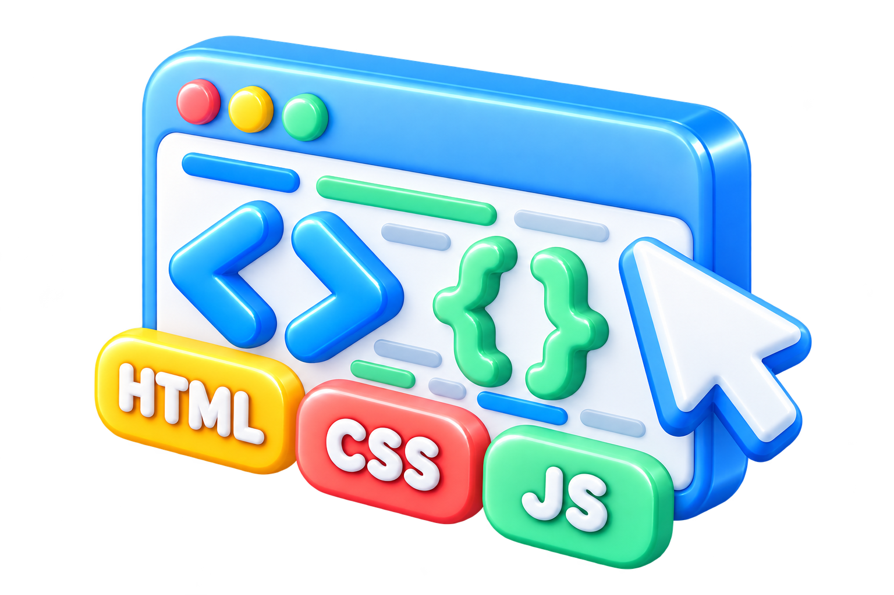

内容と骨組み
見出し、文章、画像、ボタンなど「ページに何があるか」を書きます。
<h1>見出し</h1>04 / WEB SITE BASICS
WebサイトやWebアプリの見た目と動きは、主に HTML・CSS・JavaScript でできています。まずは「どのファイルが、何を担当するのか」から見ていきましょう。

01 / WEB PAGE PARTS
Webページは、ひとつのファイルだけで完結するとは限りません。素材と役割をフォルダに分けて置くと、AIに直してほしい場所も伝えやすくなります。
最初は index.html を入口にして、そこからCSS・JavaScript・画像を読み込むと考えれば大丈夫です。
02 / THREE ROLES
見出し、文章、画像、ボタンなど「ページに何があるか」を書きます。
<h1>見出し</h1>文字色、余白、丸み、横並びなど「どう見せるか」を書きます。
h1 { color: #ff0000; }クリックしたら開く、時間で変わるなど「どう反応するか」を書きます。
button.addEventListener(...)AIには「index.html の見出しを追加し、style.css で青くして、script.js にクリック時の動きを書いて」と、ファイル名と役割を一緒に伝えるのがコツです。
03 / MAKE FILES
特別なソフトは要りません。文字を書いて、名前の最後（拡張子）を .html や .css にして保存するだけです。
デスクトップを右クリックして「新規作成 → フォルダー」。名前は半角で my-site など。
タイトルなし - メモ帳
<h1>見出し</h1> <p>はじめての…</p>
スタートメニューで「メモ帳」を探して開き、HTMLを書きます。
名前を付けて保存
「ファイル → 名前を付けて保存」で、保存先に my-site を選びます。種類を「すべてのファイル」にして index.html と入力。
つまずきポイント種類が「テキスト文書」のままだと index.html.txt になります。拡張子が見えないときは、エクスプローラーの「表示 → 表示 → ファイル名拡張子」にチェックを入れます。
デスクトップを右クリック（control＋クリック）して「新規フォルダ」。名前は半角で my-site など。
名称未設定
<h1>見出し</h1> <p>はじめての…</p>
「テキストエディット」を開き、メニューの「フォーマット → 標準テキストにする」を選んでから書きます。
保存
「ファイル → 保存」で名前を index.html にして、場所に my-site を選びます。確認が出たら「“.html” を使用」。
つまずきポイント「標準テキスト」にしないと、文字の飾りまで保存されてHTMLとして読めません。保存したHTMLをもう一度編集するときは、設定の「開く／保存」で「HTMLファイルを、フォーマットしたテキストではなくHTMLコードとして表示」を選びます。
CSSは style.css、JavaScriptは script.js という名前で、同じフォルダーに保存します。最後に index.html をダブルクリックすると、ブラウザーでページが開きます。
手順の確認日：2026年10月12日 Apple：テキストエディットでHTML書類を操作する ↗ Microsoft：Windows の一般的なファイル名拡張子 ↗
画面の絵は説明用の図で、実際の画面とは見た目が異なります。
04 / MINI PREVIEW
このミニ実験は学習用の再現です。HTMLとCSSを書き換えると、下のプレビューがその場で変わります。JSは決まった動きを1つだけ用意しています。
実ファイルは変更されません
この実験室と同じ3つのファイル（index.html・style.css・script.js）を、最小のサンプルとしてダウンロードできます。ZIPを解凍して index.html をダブルクリックすると、ブラウザーで開きます。
HTML・CSS・JSの役割を、もっと画面で試してみよう